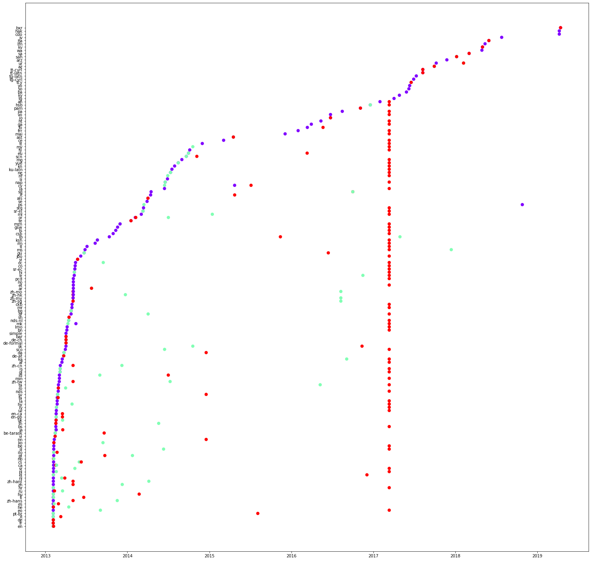
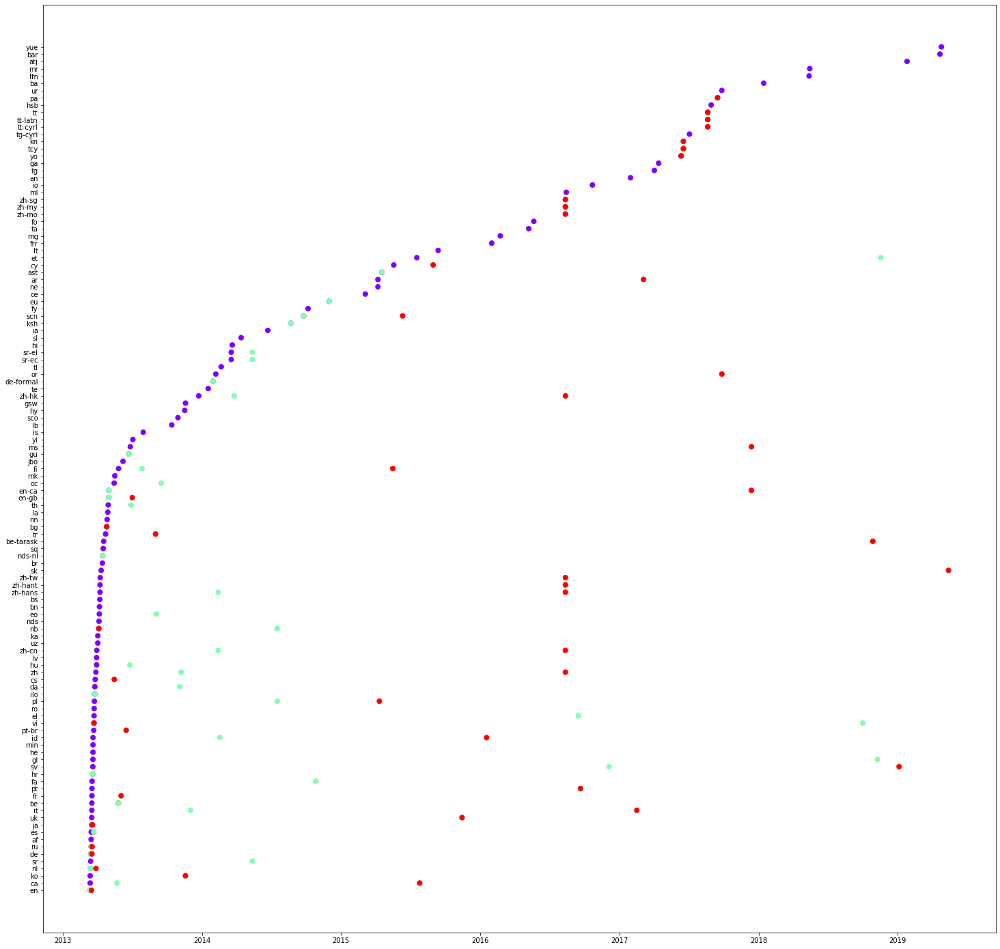
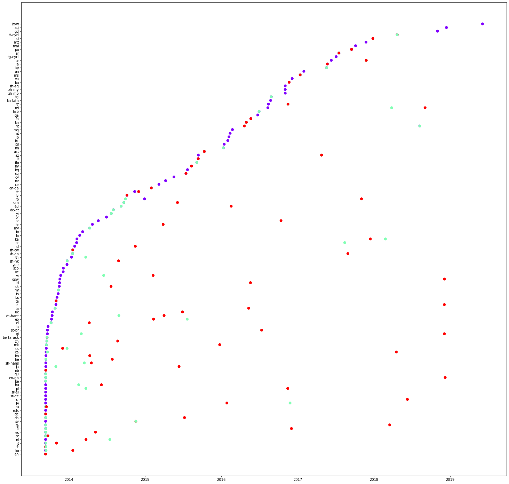

Année: 2021-2022
Contents
Année: 2021-2022¶
Mini Projet¶
Objectifs¶
Comprendre le mode de traduction
Exercice 1.1¶
Download¶
Téléchargez les données à partir de https://zenodo.org/record/3271358.
Voir le contenu des données. Comme vous pouvez le voir dans les résultats, il y a quatre colonnes : horodatage, propriété, langue et type.
Prenons un exemple de ligne de cet ensemble de données,
2013-09-10T22:43:54Z,P856,en,label
correspond à l’action qu’un label anglais de la propriété P856 ajouté pour la première fois à 2013-09-10T22:43:54Z.
Vous trouverez ci-dessous une description de chaque colonne.
horodatage : l’heure à laquelle une action a été effectuée. Par exemple, 2013-09-10T22:43:54Z
la propriété : Identificateur de propriété Wikidata. Il utilise le numéro P, par exemple, P856
langue : la langue dans laquelle une étiquette/description/alias a été rédigée en premier traduit
type : Il peut s’agir de l’une des valeurs suivantes : label(étiquette), description et alias
Création de dataframe¶
import pandas as pd
dataframe = pd.read_csv("../../en/Project/multilingual_wikidata_translation_flow.csv")
# remove duplicates
dataframe = dataframe.drop_duplicates()
# remove rows with missing values
dataframe = dataframe.dropna()
print(dataframe)
Obtenez une information détaillée du dataframe
dataframe.describe()
Examinons maintenant la traduction des étiquettes dans différents langues pour une propriété donnée.
dataframe.loc[(dataframe["property"]=="P856") & (dataframe["type"]=="label")]
Nous allons vérifier les données disponibles pour une propriété comme P856.
ptranslation = dataframe.loc[(dataframe["property"]=="P856")]
print(ptranslation)
Vous pouvez également ajouter des conditions supplémentaires pour filtrer toute information. Le code ci-dessous permet de filtrer la traduction des étiquettes de la propriété P856. Veuillez copier le code ci-dessous et créer de nouvelles cellules pour les tests avec différentes propriétés et voir les résultats pour la traduction des descriptions et des alias. Quelles sont vos premières observations ? Veuillez les noter comme commentaires dans votre notebook.
ptranslation = dataframe.loc[(dataframe["property"]=="P856") & (dataframe["type"]=="label")]
print(ptranslation)
Visualisation de la traduction¶
Notre prochain objectif est de tracer la traduction d’une propriété et de voir si nous pouvons observer n’importe quel mode de traduction. Veuillez copier le code ci-dessous et créer de nouvelles cellules pour les tests avec des propriétés différentes et tracer la résultats. Dans ce graphique, nous traçons le temps sur l’axe des x et la traduction tapez sur l’axe des y.
import matplotlib
import matplotlib.pyplot as plot
from dateutil import parser
import numpy as np
ptranslation = dataframe.loc[(dataframe["property"]=="P856")]
x = []
y = []
z = []
for i in range(0, len(ptranslation['timestamp'])):
#parsing the date in string and converting it to datetime
try:
value = parser.parse(ptranslation['timestamp'].iloc[i])
x.append(value)
except Exception:
continue
y.append(ptranslation['type'].iloc[i])
z.append(ptranslation['language'].iloc[i])
#creating a plot
plot.rcParams["figure.figsize"] = (25, 9)
colors = matplotlib.cm.rainbow(np.linspace(0, 1, 3))
tcolors = {'label': colors[0],
'description':colors[1],
'alias':colors[2]
}
cs = [tcolors[i] for i in y]
fig, ax = plot.subplots()
ax.scatter(x, y, s=30, color=cs)
plot.xlabel("Time")
plot.ylabel("Translation type")
#annotating the points
for i, txt in enumerate(z):
ax.annotate(txt, (x[i], y[i]))
plot.show()
Maintenant, nous traçons un autre graphique, cette fois-ci, la langue sur l’axe des y et le temps sur l’axe des x.
import matplotlib
import matplotlib.pyplot as plot
from dateutil import parser
import numpy as np
ptranslation = dataframe.loc[(dataframe["property"]=="P279")]
x = []
y = []
z = []
for i in range(0, len(ptranslation['timestamp'])):
try:
#parsing the date in string and converting it to datetime
value = parser.parse(ptranslation['timestamp'].iloc[i])
x.append(value)
except Exception:
continue
y.append(ptranslation['type'].iloc[i])
z.append(ptranslation['language'].iloc[i])
#creating a plot
colors = matplotlib.cm.rainbow(np.linspace(0, 1, 3))
tcolors = {'label': colors[0],
'description':colors[1],
'alias':colors[2]
}
cs = [tcolors[i] for i in y]
plot.rcParams["figure.figsize"] = (25, 25)
fig, ax = plot.subplots()
ax.scatter(x, z, s=50, color=cs)
plot.xlabel("Time")
plot.ylabel("Language")
# saving the plot in a file
plot.savefig('translation.png')
plot.show()
Voici trois graphiques concernant les propriétés : P31, P279 et P856 respectivement. Quelles sont vos observations sur les valeurs sur l’axe des y ? Veuillez les noter en tant que commentaires sur le notebook. Vous pouvez également constater que certains traductions peuvent même être effectuées en une seule fois. Veuillez vérifier une colonne de lignes rouges dans le premier graphique (P31).



Dans le code donné ci-dessous, nous sélectionnons quelques langues et voyons l’ordre de traduction. Copiez le code ci-dessous et tracez les graphiques pour les différents propriétés. Veuillez noter vos observations.
import matplotlib
import matplotlib.pyplot as plot
from dateutil import parser
import numpy as np
#list of languages under consideration
langlist = ["fr", "es", "en", "de", "it", "pt", "ja"]
ptranslation = dataframe.loc[(dataframe["property"]=="P18") & (dataframe["language"].isin (langlist))]
print(ptranslation)
x= []
y= []
z= []
for i in range(0, len(ptranslation['timestamp'])):
try:
#parsing the date in string and converting it to datetime
value = parser.parse(ptranslation['timestamp'].iloc[i])
x.append(value)
except Exception:
continue
y.append(ptranslation['type'].iloc[i])
z.append(ptranslation['language'].iloc[i])
#creating a plot
colors = matplotlib.cm.rainbow(np.linspace(0, 1, 3))
tcolors = {'label': colors[0],
'description':colors[1],
'alias':colors[2]
}
cs = [tcolors[i] for i in y]
plot.rcParams["figure.figsize"] = (10, 5)
fig, ax = plot.subplots()
ax.scatter(x, z, s=50, color=cs)
plot.savefig('translation.png')
plot.show()
Exercice 1.2¶
Nous avons utilisé des techniques de traçage pour détecter manuellement certains modes de traduction. Nous utilisons maintenant d’autres algorithmes pour voir si des groupes de les langues sont toujours présentes ensemble
Avant de continuer, nous devons installer la bibliothèque mlxtend.
!pip install mlxtend
Ensuite, nous préparons l’ensemble des données linguistiques. Nous nous concentrerons sur la traduction de labels de propriété. Nous créons une liste des traductions disponibles d’étiquettes de toutes les propriétés de notre base de données
#prepare dataset of languages
languageorder = []
labeldataframe = dataframe.loc[(dataframe["type"] == "label")]
groups = labeldataframe.groupby(["property"])
for k, group in groups:
languageorder.append(list(groups.get_group((k))["language"]))
print(languageorder)
Cela nous donnera le résultat suivant.
[['en', 'it', 'fi', 'fr', 'de', 'zh-hans', 'ru', 'hu', 'he', 'nl', 'pt', 'pl', 'ca', 'cs', 'ilo', 'zh', 'nb', 'ko',..
Maintenant, nous calculons les ensembles d’éléments fréquents en utilisant l’algorithme apriori. Veuillez décommenter la ligne print pour voir le dataframe intermédiaire.
from mlxtend.preprocessing import TransactionEncoder
from mlxtend.frequent_patterns import apriori
te = TransactionEncoder()
te_ary = te.fit(languageorder).transform(languageorder)
# preparation of data frame
df = pd.DataFrame(te_ary, columns=te.columns_)
#print(df)
#use of apriori algorithm
frequent_itemsets = apriori(df, min_support=0.75, use_colnames=True)
print (frequent_itemsets)
Le programme utilise un soutien minimum de 0,75. On voit que les labels anglais sont présents pour toutes les propriétés, alors que les labels français ne sont disponible pour 93% des propriétés. Sur la prise en compte des paires de langues, on constate que l’anglais et l’arabe sont présents dans 93% des traductions. En allant plus loin, nous constatons des combinaisons de 3, 4, 5 langues, etc.
Veuillez changer cette valeur entre 0 et 1 et voyez le résultat.
S.No. support itemsets
------- ---------- ---------------------- ----------
0 0.998424 (ar)
1 0.759414 (ca)
2 1.000000 (en)
3 0.932409 (fr)
4 0.993540 (nl)
5 0.985978 (uk)
6 0.758626 (ar, ca)
7 0.998424 (en, ar)
8 0.931621 (ar, fr)
9 0.992752 (nl, ar)
10 0.985663 (ar, uk)
11 0.759414 (en, ca)
12 0.759256 (nl, ca)
13 0.754215 (uk, ca)
14 0.932409 (en, fr)
15 0.993540 (nl, en)
16 0.985978 (en, uk)
17 0.931779 (nl, fr)
18 0.928155 (uk, fr)
19 0.985663 (nl, uk)
20 0.758626 (en, ar, ca)
21 0.758469 (nl, ar, ca)
22 0.753899 (ar, uk, ca)
23 0.931621 (en, ar, fr)
24 0.992752 (nl, en, ar)
25 0.985663 (en, ar, uk)
26 0.931149 (nl, ar, fr)
27 0.927997 (ar, uk, fr)
28 0.985347 (nl, ar, uk)
29 0.759256 (nl, en, ca)
30 0.754215 (en, uk, ca)
31 0.754057 (nl, uk, ca)
32 0.931779 (nl, en, fr)
33 0.928155 (en, uk, fr)
34 0.985663 (nl, en, uk)
35 0.927840 (nl, uk, fr)
36 0.758469 (nl, en, ar, ca)
37 0.753899 (en, ar, uk, ca)
38 0.753742 (nl, ar, uk, ca)
39 0.931149 (nl, en, ar, fr)
40 0.927997 (en, ar, uk, fr)
41 0.985347 (nl, en, ar, uk)
42 0.927682 (nl, ar, uk, fr)
43 0.754057 (nl, en, uk, ca)
44 0.927840 (nl, en, uk, fr)
45 0.753742 (ar, en, ca, nl, uk)
46 0.927682 (ar, en, fr, nl, uk)
Répétez l’expérience ci-dessus pour les descriptions et les alias. Quels sont vos observations. Veuillez les noter dans le notebook en tant que commentaires.
Exercice 1.3¶
Notre prochain objectif est de générer les règles d’association, c’est-à-dire les règles de la forme: A -> C, où A est l’antécédent et C est la conséquence.
from mlxtend.frequent_patterns import association_rules
association_rules(frequent_itemsets, metric="confidence", min_threshold=0.95)
Cela nous donnera le résultat suivant.
S.No. antecedents consequents antecedent support consequent support support confidence lift leverage conviction
------- ------------- ------------- -------------------- -------------------- ---------- ------------ ---------- ---------- ------------
0 (de) (en) 0.479193 0.988966 0.477932 0.997368 1.008496 0.004026 4.192938
1 (de) (uk) 0.479193 0.960277 0.468789 0.978289 1.018757 0.008631 1.829646
2 (es) (en) 0.389975 0.988966 0.388556 0.996362 1.007479 0.002884 3.033137
3 (fr) (en) 0.713272 0.988966 0.708859 0.993812 1.004900 0.003457 1.783181
4 (it) (en) 0.413934 0.988966 0.413146 0.998096 1.009232 0.003779 5.795082
5 (ru) (en) 0.301387 0.988966 0.300441 0.996862 1.007984 0.002380 3.516183
6 (en) (uk) 0.988966 0.960277 0.950189 0.960791 1.000534 0.000507 1.013087
7 (uk) (en) 0.960277 0.988966 0.950189 0.989494 1.000534 0.000507 1.050303
8 (es) (uk) 0.389975 0.960277 0.383039 0.982215 1.022845 0.008555 2.233492
9 (fr) (uk) 0.713272 0.960277 0.689470 0.966630 1.006615 0.004531 1.190362
10 (it) (uk) 0.413934 0.960277 0.405738 0.980198 1.020745 0.008246 2.005990
11 (ru) (uk) 0.301387 0.960277 0.300126 0.995816 1.037009 0.010711 9.493695
12 (de, fr) (en) 0.391393 0.988966 0.391078 0.999195 1.010343 0.004003 13.698770
13 (de, uk) (en) 0.468789 0.988966 0.467686 0.997646 1.008777 0.004069 4.687894
Examinons l’une des règles d’association (de, fr)->(en). Le score de confiance est de 0,999195. Mais cette règle stipule que lorsque nous avons des traductions en français et en allemand seront disponibles, nous aurons également la traduction anglaise.
Vous pouvez changer la métrique “lift” et tester.
Nous allons maintenant ajouter deux colonnes qui contiendront la longueur des antécédents et ses conséquences. Comme vous l’avez peut-être remarqué, les règles d’association sont des dataframes. Nous pouvons donc facilement écrire des conditions de filtrage pour obtenir des antécédents et les conséquences d’une longueur supérieure à 1.
from mlxtend.frequent_patterns import association_rules
arules = association_rules(frequent_itemsets, metric="confidence", min_threshold=0.95)
arules["antecedent_len"] = arules["antecedents"].apply(lambda x: len(x))
arules["consequent_len"] = arules["consequents"].apply(lambda x: len(x))
arules.loc[(arules["antecedent_len"]>1) &
(arules["consequent_len"]>1)]
S.No. antecedents consequents antecedent support consequent support support confidence lift leverage conviction antecedent\_len consequent\_len
------- ------------- ------------- -------------------- -------------------- ---------- ------------ ---------- ---------- ------------ ----------------- -----------------
32 (de, fr) (en, uk) 0.391393 0.950189 0.383670 0.980266 1.031653 0.011772 2.524088 2 2
35 (fr, es) (en, uk) 0.332755 0.950189 0.326765 0.981999 1.033477 0.010585 2.767124 2 2
38 (fr, it) (en, uk) 0.345523 0.950189 0.338430 0.979471 1.030817 0.010117 2.426342 2 2
Répétez l’expérience ci-dessus pour la traduction des descriptions et des alias. Veuillez noter vos observations sous forme de commentaires.
Exercice 1.4¶
Notre prochain objectif est de visualiser le flux de traduction. À cette fin, nous installons des packages holoviews et bokeh.
!pip install holoviews bokeh --upgrade
Tout d’abord, nous créons des groupes pour différentes traductions.
languageorder = []
labeldataframe = dataframe.loc[(dataframe["type"] == "label")]
groups = labeldataframe.groupby(["property"])
for k, group in groups:
languageorder.append(list(groups.get_group((k))["language"]))
languagepairs = []
for lo in languageorder:
for i in range(0, len(lo)-1):
languagepairs.append([lo[i], lo[i+1], 1])
lpdataframe = pd.DataFrame(languagepairs)
lpdataframe.columns = ['source', 'target', 'count']
groups = lpdataframe.groupby(["source","target"]).count().reset_index()
print(groups)
Ensuite, nous les visualisons en utilisant un graphique circulaire. Notez le code ci-dessous, nous n’ont pris que 500 combinaisons de paires de langues.
import networkx as nx
import matplotlib.pyplot as plot
G = nx.from_pandas_edgelist(groups[:500], 'source', 'target')
plot.rcParams["figure.figsize"] = (15,15)
pos = nx.circular_layout(G)
nx.draw(G, pos, with_labels=True)
Copiez le code ci-dessus et vérifiez le flux des traductions pour toutes les langues de votre choix (nombre de langues > 20).
Utilisez également la disposition des chords de Bokeh/Holoviews pour visualiser les poids.
Exercice 1.5¶
Prévision¶
Notre objectif final est de prévoir la ou les prochaine(s) langue(s) qui seront traduit, compte tenu d’une séquence de traductions disponibles.
Prenons par exemple, supposons que nous ayons vu les séquences suivantes de traduction.
[['en', 'it', 'fi', 'fr', 'de', 'nl', 'pt', 'pl', 'ca', 'cs']
['en', 'it', 'fi', 'fr', 'de', 'ilo', 'zh', 'nb']
['ru', 'hu', 'he', 'nl', 'pt', 'pl', 'ca', 'cs'],
... ]
Une fois que votre modèle a été formé à l’utilisation de ces données, il peut être en mesure prévoir la ou les prochaine(s) traduction(s) possibles.
Exemple 1 : Si l’utilisateur saisit la séquence suivante,
['pt']
votre modèle peut renvoyer la langue suivante
['pl']
Exemple 2: Si l’utilisateur saisit la séquence suivante,
['it', 'fi']
votre modèle peut renvoyer la langue suivante
['fr']
Exemple 3: Si l’utilisateur saisit la séquence suivante,
['nl', 'pt', 'pl']
votre modèle peut renvoyer les langues suivantes
['ca', 'cs']
Votre objectif dans cet exercice est de former un modèle de réseau neuronal qui peut prévoir la ou les prochaine(s) traduction(s) probables des étiquettes (ou descriptions ou alias).
Pour créer ce modèle, vous devez utiliser la séquence de traduction des propriétés de Wikidata vues ci-dessus. Vous devez séparer les séquences de traduction dans des séquences d’entraînement et de test. Veuillez indiquer les mesures de précision de votre modèle.
Il est important de faire la distinction entre les séquences de traduction des étiquettes, des descriptions et des alias, c’est-à-dire que l’utilisateur peut demander la prochaine langue(s) probable(s) pour l’une des trois.
Veuillez commenter votre code et noter vos observations. Par exemple, quelle est la longueur maximale de la séquence d’entrée et de la séquence de sortie ? Quelle est la métrique de précision ? Pourquoi avez-vous choisi un réseau de neurones donné modèle ? …
Indice: Vous pouvez utiliser un réseau neuronal récurrent avec LSTM (Long mémoire à court terme) ou des modèles de ‘word embeddings’.